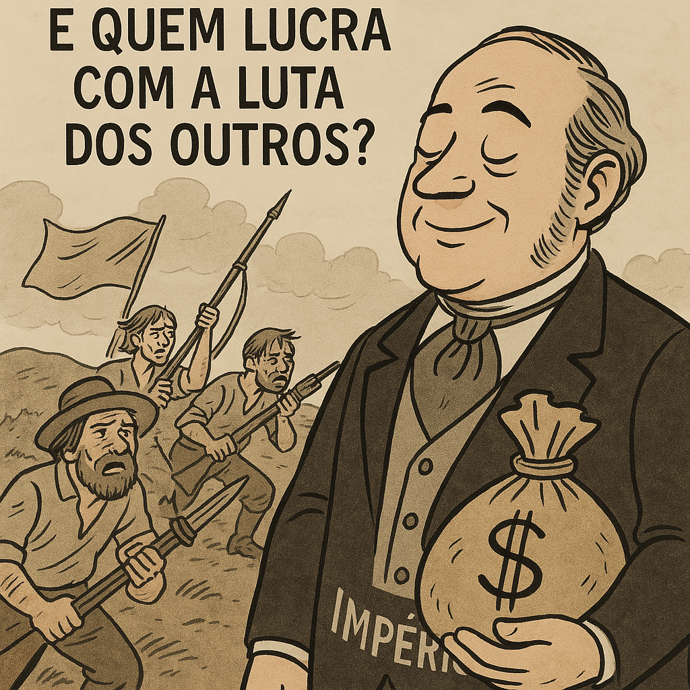

Revolução Farroupilha (1835-1845)
O que foi a Revolução Farroupilha?
A Revolução Farroupilha aconteceu de 1835 a 1845, no sul do Brasil,
principalmente no Rio Grande do Sul. Foi um conflito entre os republicanos
gaúchos e o governo imperial brasileiro. O motivo principal foi
a insatisfação com as políticas econômicas e a falta de autonomia
política da região. Os farroupilhas queriam mais liberdade para
administrar suas terras e riquezas, especialmente no comércio.
Principais Causas
As causas da revolução estavam ligadas ao controle econômico e político.
O governo imperial cobrava altos impostos sobre o charque (carne seca),
produto essencial na economia gaúcha. Além disso, os gaúchos se sentiam
negligenciados pela centralização do poder no Rio de Janeiro, o que gerou
o desejo de maior autonomia e até mesmo a criação de uma república.
A Batalha e o Final
Durante a revolução, ocorreram várias batalhas entre os farroupilhas e o
exército imperial. Os farroupilhas conseguiram conquistar algumas
vitórias, mas, após 10 anos de conflitos, acabaram sendo derrotados.
O Tratado de Ponche Verde, assinado em 1845, marcou o fim da revolução,
com a promessa de anistia para os rebeldes e a manutenção da ordem social.
Charge: Reflexão Crítica
Integrantes (extrema importância)
Nathan (fiz o código)
Davi Ribeiro (fez o design)
Davi da Conceição(primeira parte da pesquisa)
Alan (segunda parte)
Diego (terceira parte)
Giovanni (Procurou as charges)
não aceito nada menos que 3,5